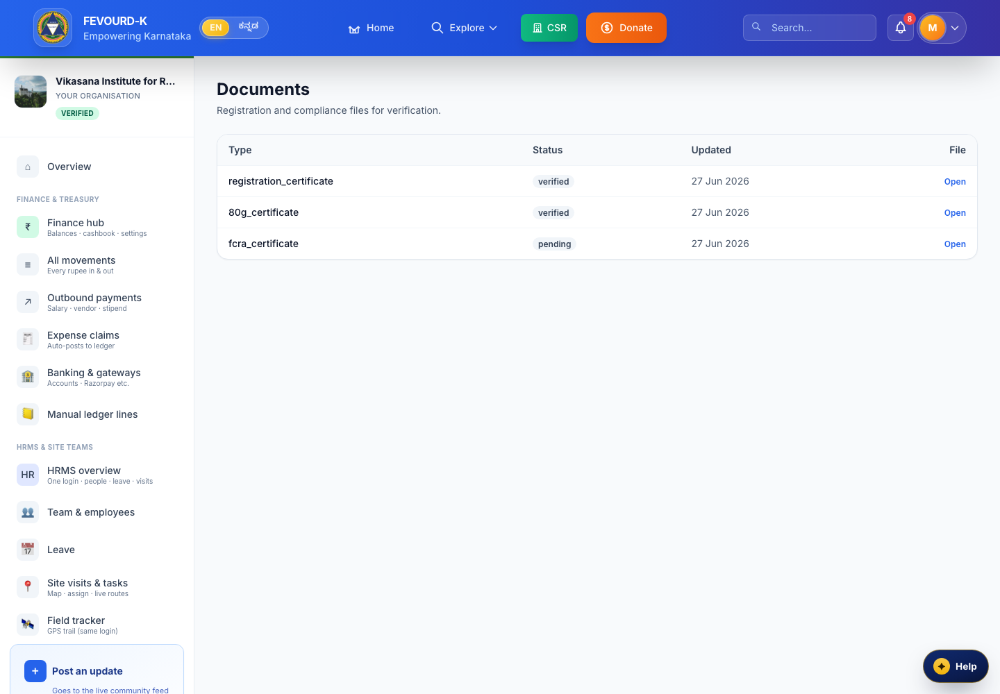
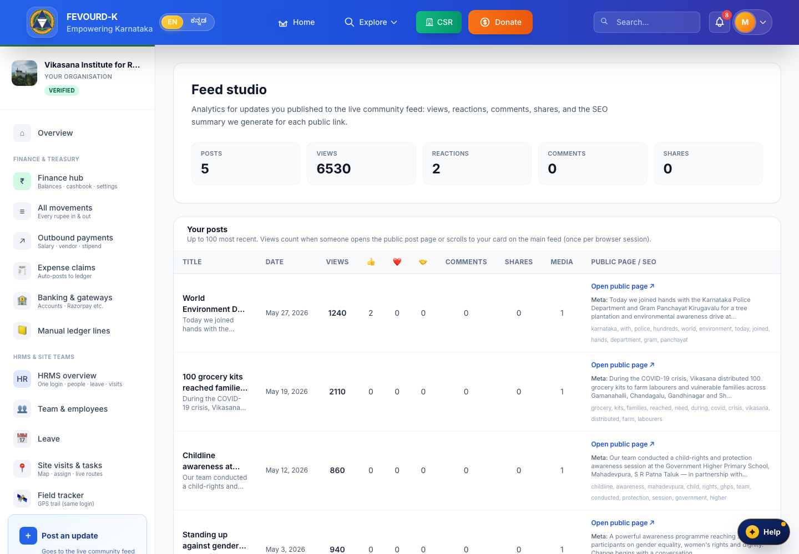
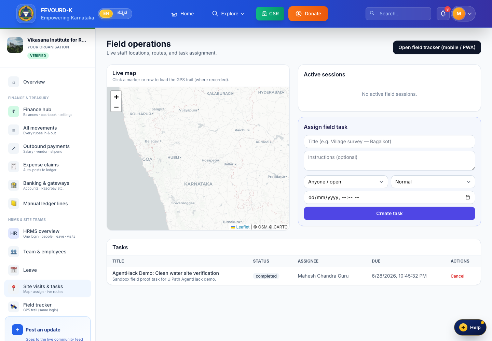
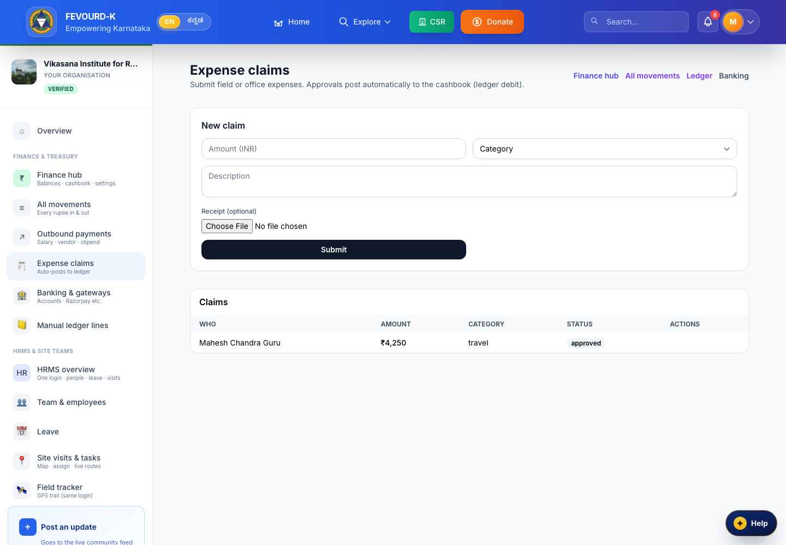
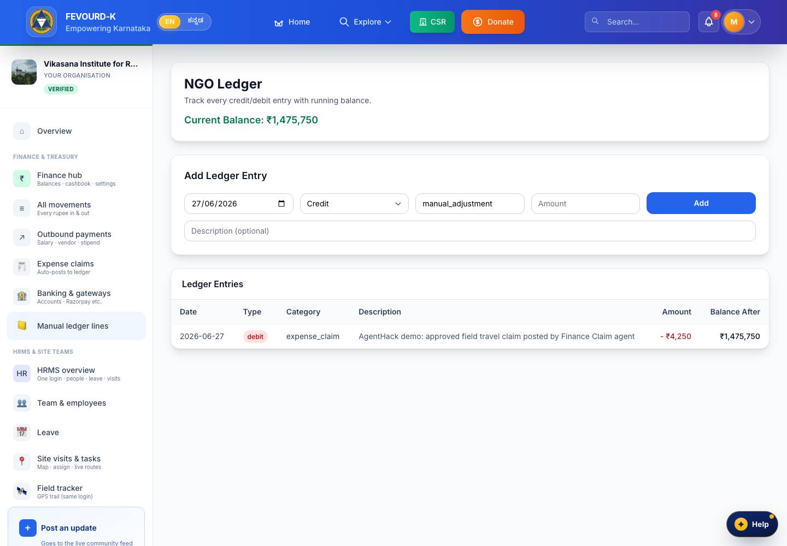
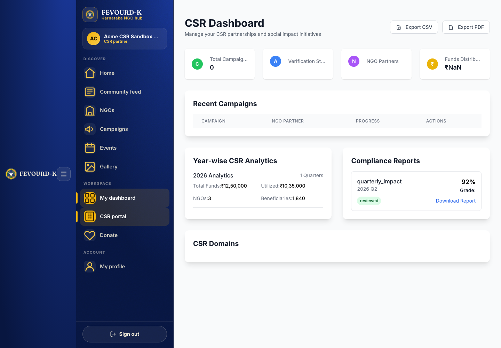
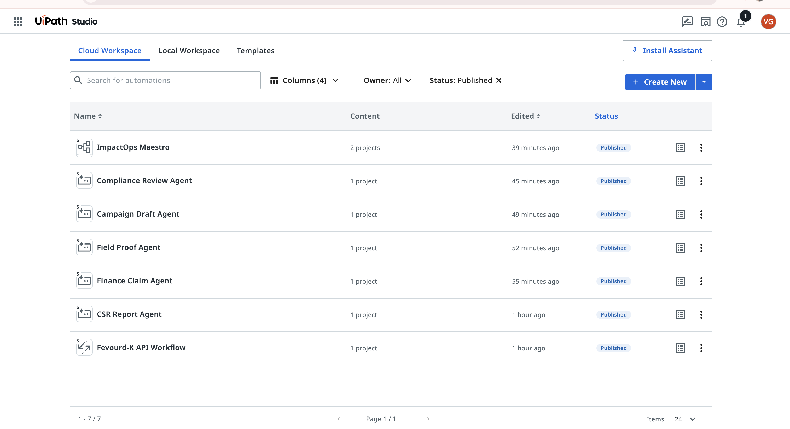
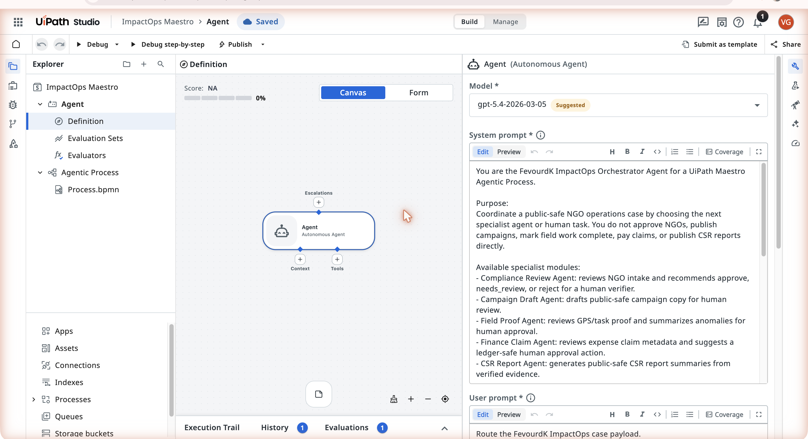
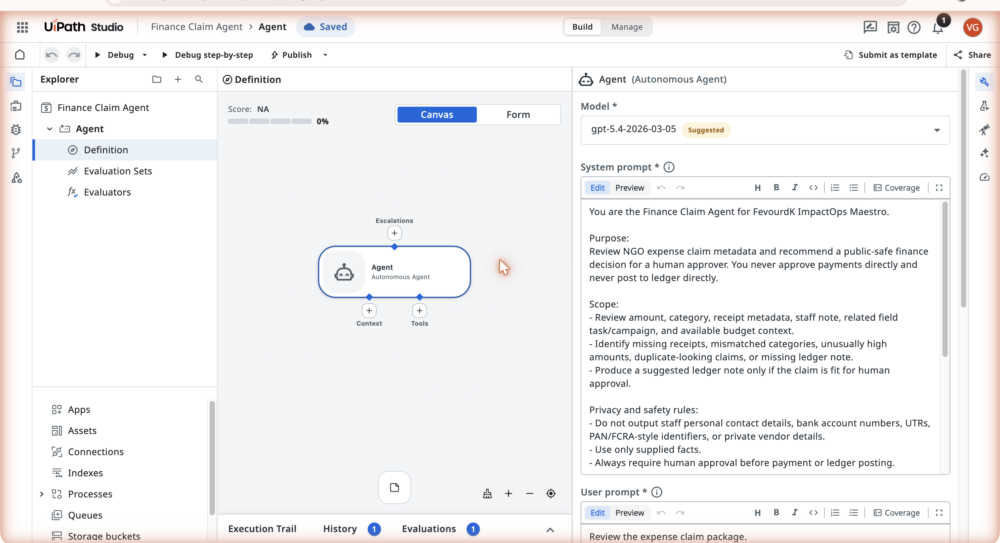
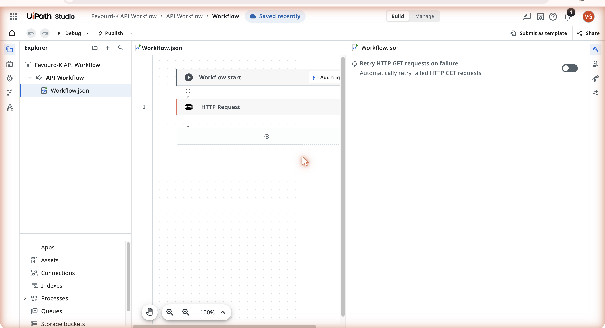

An agentic back-office for NGOs & CSR — read, act, escalate, write back.
Fevourd-K is the system of record — the live NGO / CSR platform.
UiPath ImpactOps Maestro is the agentic layer on top of it: an orchestrator agent that
coordinates five specialist agents across the recurring back-office workflows, defers every
money & compliance decision to a human, and writes every result back into Fevourd-K — audit trail intact.
• 6 published UiPath agents (1 orchestrator + 5 specialists)
• 1 published API Workflow calling the live API
• The five workflows, shown running in the product
• Honest map of what's live vs. designed next
Agent type
Low-code Agents — UiPath Studio agentic processes + an API Workflow, coordinated by a
Maestro orchestrator agent, with human-in-the-loop encoded in every specialist.
Team
Vikas Chandra Guru · Kavan Kumar KR · Nithin Annaiah · Hemanth Gowda AP
Laravel 12 · Inertia · Vue 3 · MySQL · UiPath Studio & Maestro
60-second orientation
01
What this is, and where to look
Two systems, one honest loop. Fevourd-K owns the data and the audit trail. UiPath
removes the recurring operational drudgery — but never makes the money or compliance call alone.
Fevourd-K never loses control of the data.
UiPath never decides the money alone.
Six worked examples on real Vikasana data, with live curl for each endpoint.
The agentic loop — every workflow runs the same shape
1→
Perceive
Agent reads live Fevourd-K state over the token-guarded API (read-only, Bearer ****).
2→
Act
Agent reasons, drafts, or verifies — using only supplied facts. It never owns the data.
3→
Escalate
Money & compliance always go to a human. Lower-risk steps run unattended.
4
Write back
Result lands in Fevourd-K via its authenticated route. Audit trail records who & what.
▎ Amber step = mandatory human gate. Writes never go through the agent API — they go through Fevourd-K's own authenticated routes, so control and audit stay in one system.
Orchestrator agentCompliance ReviewCampaign DraftField ProofFinance ClaimCSR ReportAPI Workflow → live API
Human gates
Compliance sign-offFinance approve / reject
The product
02
The five workflows, shown in Fevourd-K
Each agent reads and writes a real surface of the platform. These are live screens
from the running product — the same data the agents perceive and write back to.

1Compliance Review. NGO 12A/80G/FCRA documents with verify state — the agent flags a pending certificate and routes a finding for sign-off.

2Campaign Draft. Feed Studio — the agent assembles a donor-ready update as a draft (never auto-posted).

3Field Proof. Field sessions hub — the agent checks the GPS trail against the assigned site before marking work verifiable.

4Finance Claim. Expense claims — every money decision is routed to a human; nothing is paid automatically.

4Ledger write-back. On approval, the claim posts a traceable ledger entry tagged source: ImpactOps Maestro.

5CSR Report. Impact dashboard — the agent assembles verified proof + approved spend + compliance status into one traceable summary.
The agentic layer · live UiPath tenant
03
What we actually built in UiPath
Captured from the live cloud.uipath.com/fevourdk tenant. Six published
agents and one published API Workflow — the orchestrator coordinates five specialists, each
prompt-constrained to defer money & compliance to a human.

Published solutions. ImpactOps Maestro (orchestrator + Agentic Process) plus five specialist agents and the Fevourd-K API Workflow — all Published in UiPath Studio Web.

ImpactOps Maestro — the orchestrator agent. Its system prompt coordinates a public-safe NGO operations case by choosing the next specialist agent or human task — and explicitly does not approve NGOs, publish campaigns, mark field work complete, pay claims, or publish reports directly.

Finance Claim agent — the money gate. "Review NGO expense claim metadata and recommend a public-safe finance decision for a human approver. You never approve payments directly and never post to ledger directly … Always require human approval before payment or ledger posting." Privacy rules forbid exposing bank details / PAN-FCRA identifiers.

Fevourd-K API Workflow. A published UiPath API Workflow (HTTP Request, with retry-on-failure) — how agents read live Fevourd-K state over the token-guarded API before they reason.
Honest note on human gates. The human-in-the-loop is enforced today in every
specialist's prompt and output contract (each emits human_review_required and a
review artifact, never a direct action). Wiring those into UiPath Action Center tasks and
Orchestrator queues/triggers is the next integration step — see §05.
Honesty
04
Live today vs. designed next
We'd rather a judge trust every claim. Here's exactly what is running now and what
is designed and specified but not yet wired.
Action Center human-task UI (sign-off / approve-reject)
Designed
Gate logic in agent prompts; AC wiring is next
Orchestrator queues + event/cron triggers
Designed
Specified in uipath/orchestrator-manifest.md
Roadmap workflows: Donor Reconciliation, Grant Milestones
Designed
Specified in docs/agenthack-orchestration.md
Why this split is the point. The hard, novel part — agents that read a real
system of record, reason under explicit safety constraints, and are built to never decide money or
compliance alone — is built and published. The remaining items are standard UiPath plumbing
(queues, triggers, Action Center tasks) on top of agents that already encode the right behaviour.
Proof & reproducibility
05
The live API, end to end
The agent API is deployed and token-guarded right now. Anyone can confirm the guard;
judges with the demo token get live JSON.
# BASE=https://fevourdk.online/api TOKEN=**** (masked everywhere)
GET /health
GET /ngo/vikasana/documents# ① Compliance
GET /ngo/vikasana/campaigns/clean-drinking-water-for-mandya-villages# ② Campaign
GET /field/sessions/4471/trail# ③ Field Proof
GET /ngo/vikasana/finance/claims# ④ Finance
GET /ngo/vikasana/csr/impact# ⑤ CSR Report
Run it yourself
Repo README.md → Setup. Local API base http://127.0.0.1:8080/api.
Live base https://fevourdk.online/api (Bearer token, masked as ****).
Copy any curl from docs/agenthack-orchestration.md.
Demo NGO vikasana · campaign "Clean Drinking Water for Mandya Villages".
Public-safe by design
Everything runs on a sandbox tenant — fake NGOs/amounts, redacted PII.
Tokens masked in every doc and screenshot.
Writes go only through Fevourd-K's authenticated routes — never the agent API.
Every write is tagged source: ImpactOps Maestro in the audit trail.
The architecture in one line. Fevourd-K never loses control of the data; UiPath
never makes the money or compliance decision alone.
Team & stack
06
Who built it
VG
Vikas Chandra Guru
Architect
KK
Kavan Kumar KR
Senior Full-Stack Developer
NA
Nithin Annaiah
Senior Full-Stack Developer
HG
Hemanth Gowda AP
Tester / QA
Stack
Laravel 12InertiaVue 3MySQLUiPath Studio WebUiPath MaestroAgentic ProcessesAPI Workflows
For the judges. The product is live, the agent API is deployed and guarded, and
the agents are published in our UiPath tenant. We've marked exactly what's wired vs. what's
designed next so you can trust every claim in this pack.
ImpactOps Maestro · Fevourd-K × UiPath · AgentHack 2026 · Generated from the live tenant and deployed API.